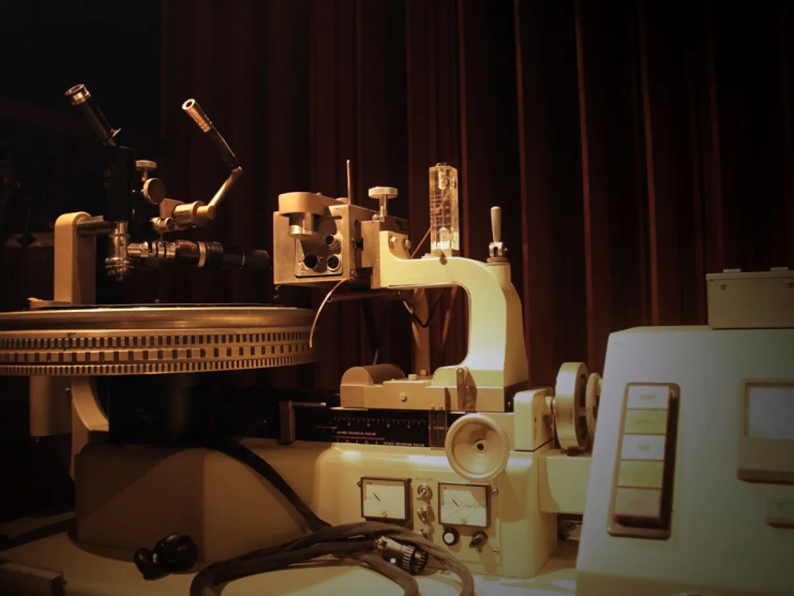

Bob Marley Museum – Kingston
Bob Marley Museum:
Para os fãs de música e cultura, o Bob Marley Museum é uma visita essencial. Localizado na capital Kingston, o museu ocupa a antiga residência do icônico cantor de reggae, que também servia como estúdio de gravação. A casa foi mantida praticamente como era nos tempos em que Marley vivia ali, com objetos pessoais, instrumentos, roupas, fotos e prêmios. O passeio guiado é repleto de histórias emocionantes sobre a vida do artista e sua influência não só na música, mas também na política e cultura mundial. O museu é mais do que uma homenagem: é um mergulho na alma da Jamaica.
|

Sobre o Museu Bob Marley
O museu Bob Marley está situado no local da antiga casa do lendário músico, adquirida por ele em 1975. Esta casa, com arquitetura do século XIX, foi o lar de Marley até sua transição em 1981. Foi convertida em museu seis anos depois por sua esposa, a Sra. Rita Marley. O museu principal exibe os tesouros pessoais de Marley.
A propriedade também conta com um teatro bem equipado com 80 lugares, uma galeria fotográfica, uma loja de discos e uma loja de presentes repleta de uma grande variedade de itens de Bob Marley.
Relaxe e desfrute de uma refeição suntuosa no One Love Café depois de concluir seu passeio, que oferece uma espiada em cada aspecto da vida de Bob Marley.
|
